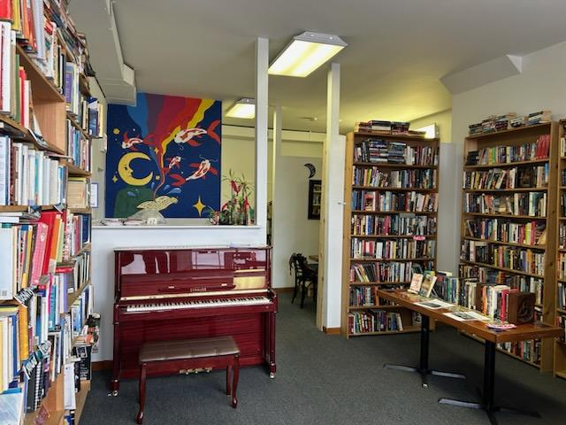
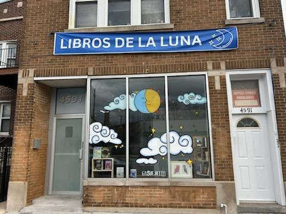

Libros de la Luna is a bilingual, non-profit, community-focused, used bookstore and cafe in Brighton Park, Chicago at 4591 S Archer Avenue. We are passionate about promoting literacy and community in the area. We sell coffee, discounted books, and want to be a place for you and your friends/family to come and enjoy! We have plenty of seating available and hope you will stay a while!
In addition to selling coffee and used books, we host events as a part of our efforts to promote literacy and community. We also host weekly, joint-learning lessons in the Nahuatl language, music lessons, and are always looking to expand to new opportunities of new and interesting events and programs! 